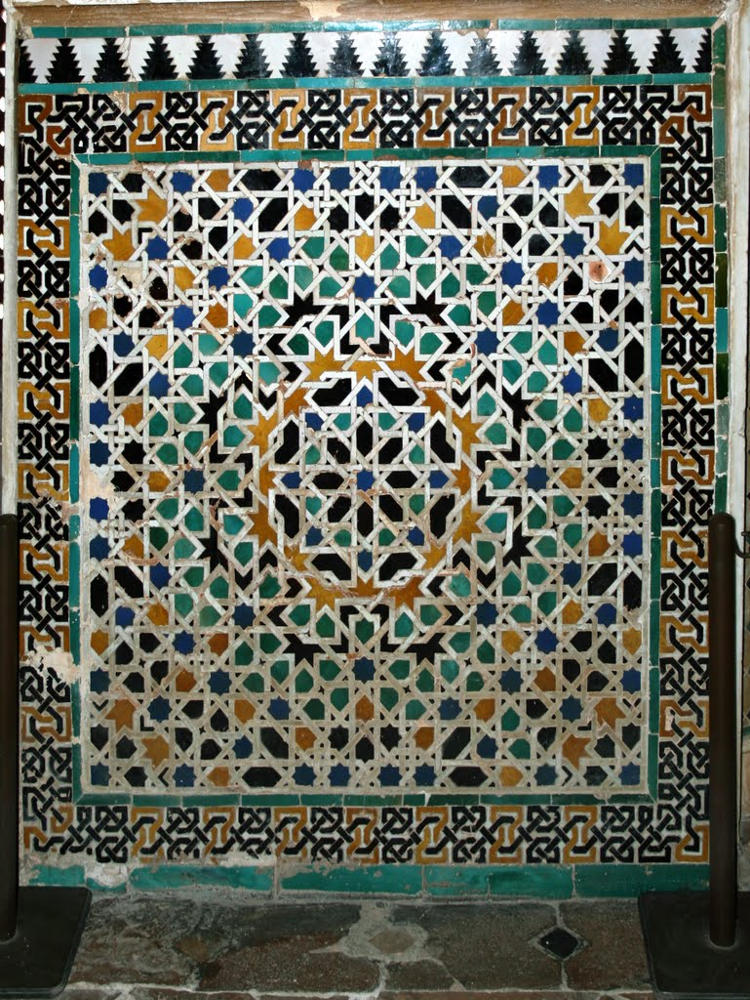
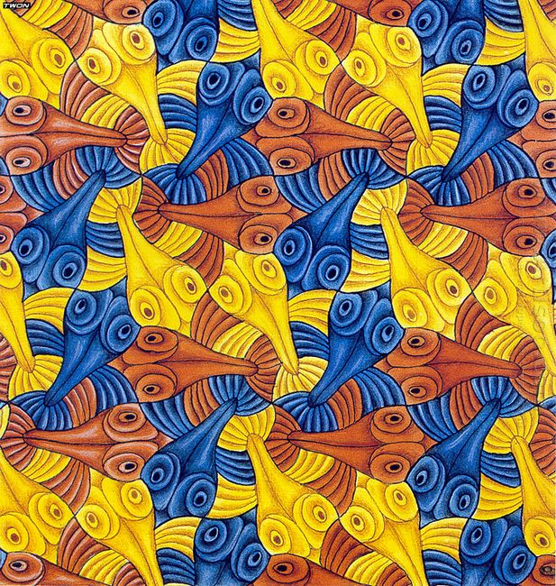

Which pentagons tile the plan?
Introduction
The art of tilings originated very early in the history of civilization. As soon as man began to build he used stones to cover floors and the walls. The oldest tilings we find today originate from the Sumerians (4000 BC) and the most exquisite ones from Islamic culture especially from the Moors. However we should not forget that people create art based on the motives they are surrounded with. So like with most things tilings originate from the nature. By exploring structures of honeycomb and snowflakes in 1616 Johannes Kepler wrote the first mathematical paper about regular and semi-regular tilings. In a more recent history popularization of tilings was done by Dutch graphic artist M.C.Escher who tried to get a good mathematical background by studying Wallpaper groups. Regardlessly that tilings have a history of at least 6000 the science of tilings and patterns, by which we mean the study of their mathematical properties, is about one century old.

